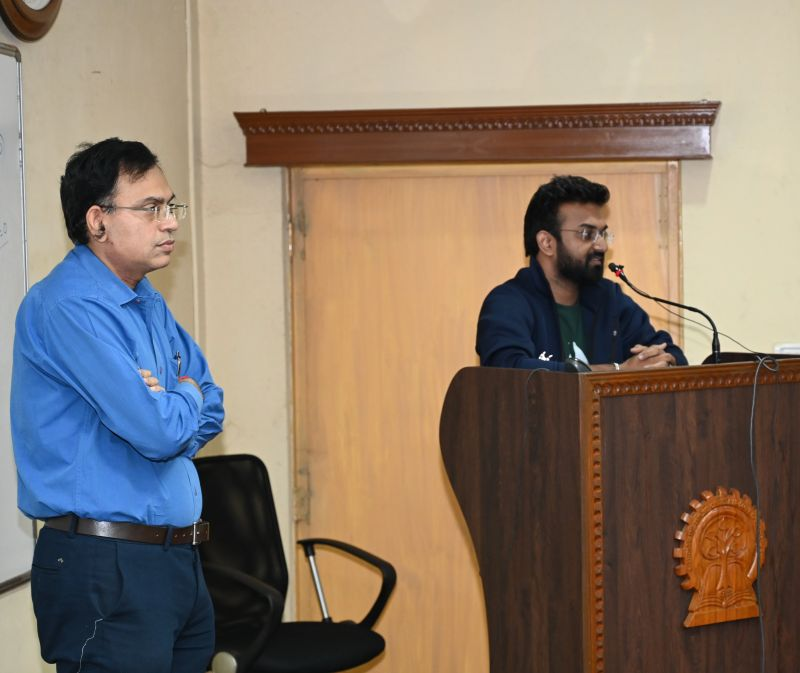
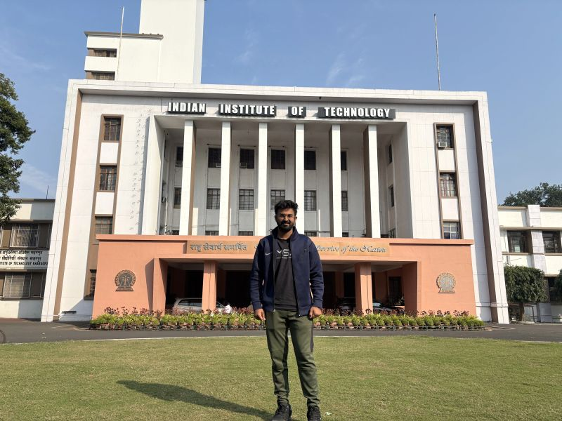

01
MICROHYDRODYNAMICS
Sperm motility from microscopy to simulation
Inferring flagellar kinematics from experimental centrelines and resolving the surrounding Stokes flow with force-coupling methods.κ0(s,t) → rod mechanics → u(x,t)

PhD Scholar · IIT Madras · CoPhe Lab
Physics-based and computational models of human physiological systems—from flagellar flows to long-duration spaceflight health.
02 — SELECTED RESEARCH
Begin with experimental measurements, physiological evidence or a well-defined physical instability.
Reduce the system to the smallest defensible geometry, variables and governing assumptions.
Use analytical models, computation and simulation to expose the governing mechanism.
Connect mathematical behaviour back to physiology, transport or flow stability.
MICROHYDRODYNAMICS
SPACE PHYSIOLOGY
DYNAMICAL SYSTEMS
METABOLIC PHYSIOLOGY
FLOW INSTABILITY
03 — POSITION
My work sits between mechanical engineering and physiology. The common thread is not one organ or disease, but a way of asking questions: what is the simplest physically defensible model that exposes the mechanism?
The long-term aim is mathematical space physiology: engineering tools that explain, predict and eventually help manage human adaptation during long-duration missions.
04 — GALLERY & MILESTONES
Selected moments of scientific exchange, academic development and recognition.

CERTIFICATION COURSE · JULY 2026
The Mathematical Intuitions Behind Modern Artificial Intelligence
Completed the short-term certification course organized by the Wadhwani School of Data Science and AI, IIT Madras, from 15 to 25 July 2026.
The course was conducted by Anil Ananthaswamy, Professor of Practice at WSAI and an award-winning science writer and author.
View course certificateGIAN COURSE · ACADEMIC EXCHANGE
“When we listen to visionary professors, we also try to follow that thought process and get inspired to do the same.”
A reflection following a GIAN course led by Prof. Suman Chakraborty. The programme illustrates how the Global Initiative of Academic Networks connects students with leading researchers and new ways of thinking.
View the original LinkedIn post




Laboratory, conference and research-event photographs.
Awards, recognitions, publications and significant academic milestones.
05 — TALKS & OUTREACH
A developing outreach programme to make research careers more visible to students—beginning with colleges across Maharashtra and extending across India.
Meet students in their own academic environment.
Explain how questions become publishable research.
Use experiments, simulations and real research examples.
Answer practical questions about higher study and research careers.
Build a wider student research network across India.
FUTURE TALK ARCHIVE
College names, event details and photographs will be added here as they are provided.
06 — LONG HORIZON
Building toward an independent research programme in engineering-driven physiology and space medicine.